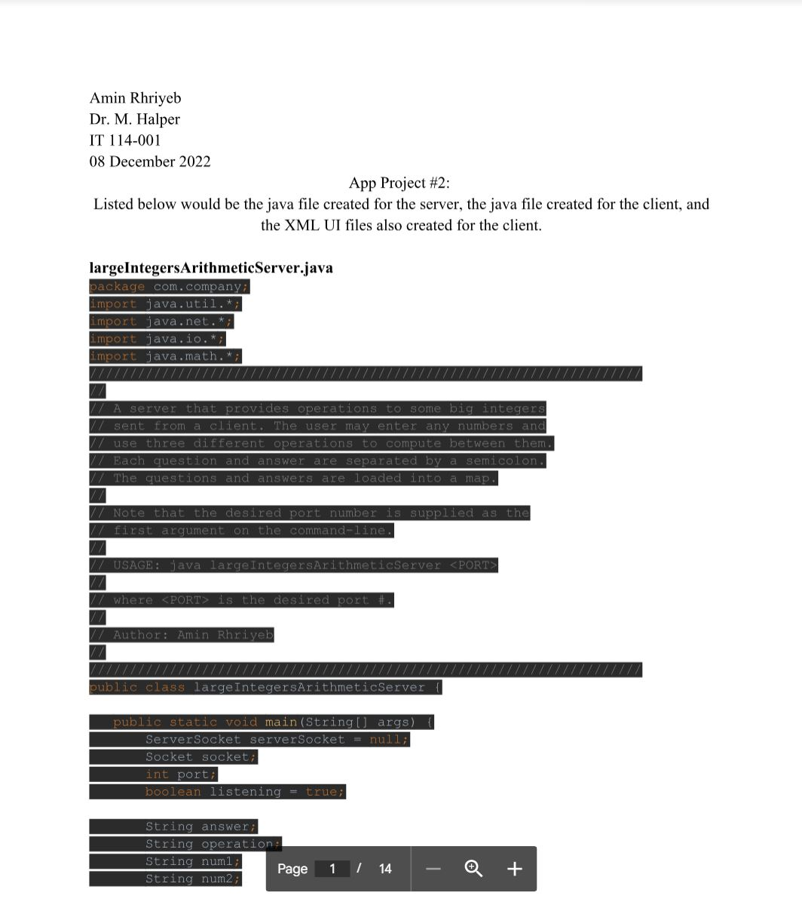

Using Cisco Packer tracer I developed the following project for my senior capstone
09/2023 - 12/2023
The objective was the following:
To provide an innovative network infrastructure for a small business that complies with industry standards while maintaining the highest levels of security, performance, and dependability.
The project's structure can be seen below:
Developed a large integer arithmetic server and client using Java and Android Studio
November 2022 - December 2022
Working together with the server, the client is able to perform three operations on any two large numbers inputted:
On top of these operations it checks for numeral validity
